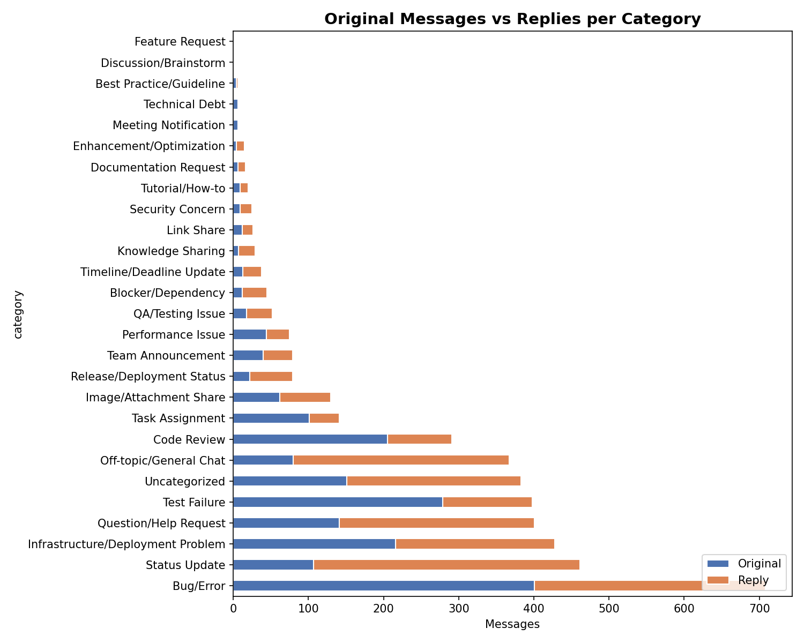
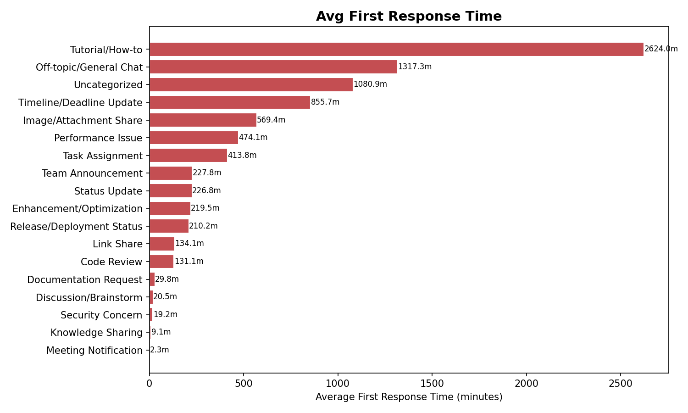

Two supporting views of the channel. Originals and replies by category show where engagement concentrates. Non-resolvable response times show where the channel is carrying non-technical traffic that never receives a technical resolution path.


A significant portion of channel volume is not technical resolution traffic. Subdividing off-topic into genuine social chatter, image and link shares, and uncategorized items separates the signal from the noise. An AI triage layer needs to route each stream differently.